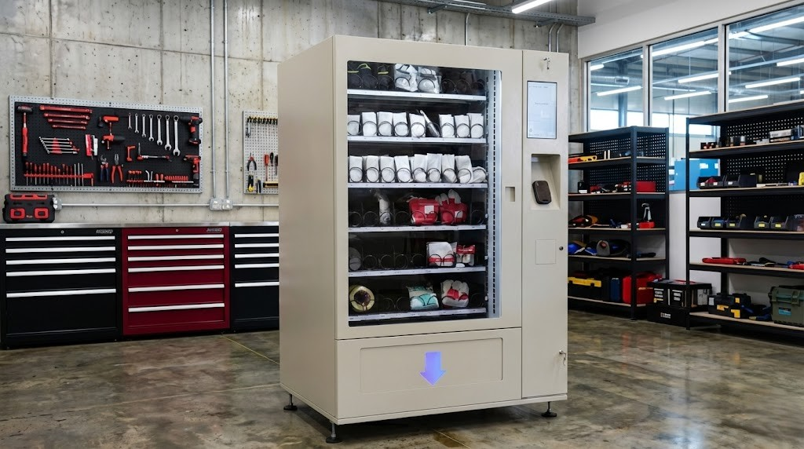
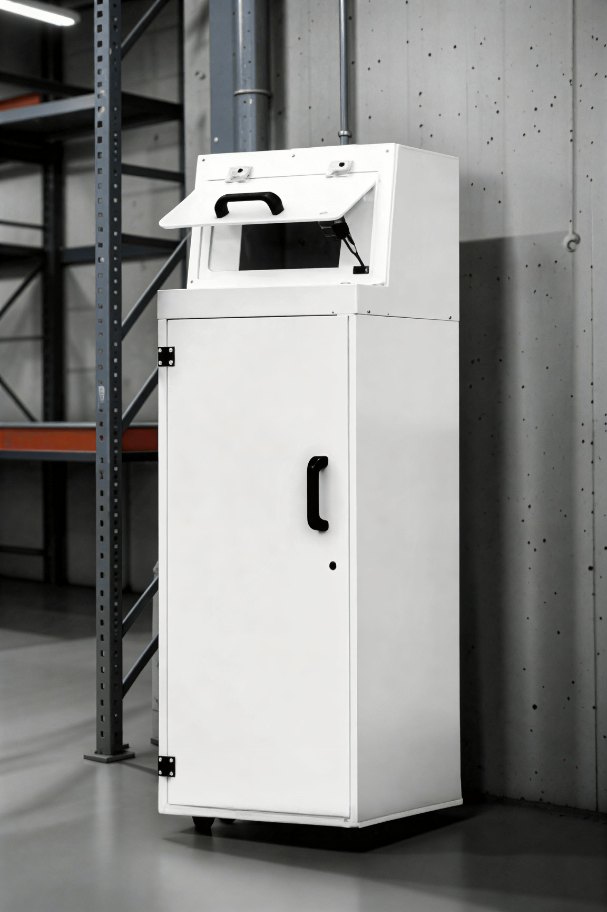
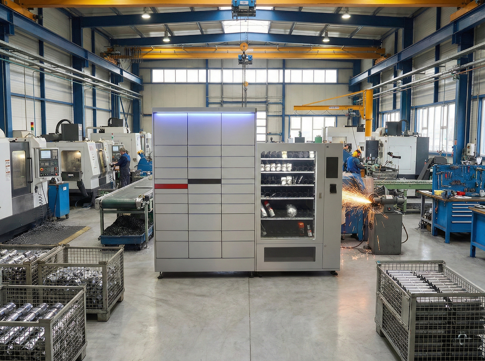

Spiralautomat mit Rücknahmeeinheit
Der Spiralautomat "S-Mat" ist ein vielseitiges Allround-Talent zur modernen, sicheren und effizienten Materialversorgung, ideal für die Ausgabe von Arbeitsschutzartikeln, Verbrauchsmaterialien oder Produktionsmitteln. Dieses intelligente System gewährleistet die zuverlässige 24/7-Verfügbarkeit wichtiger Artikel.
- Effizienzsteigerung: Platz- und Zeitersparnis, verminderte Lohnkosten durch erhöhte Effektivität.
- Kostenreduktion: Sinkende administrative Kosten und Minderung von Verlusten durch fehlende Administration.
- Wirtschaftlichkeit: Wirtschaftliche Wartung und leicht zugängliche Ersatzteile.
- Verfügbarkeit: Rund um die Uhr (0-24h) betriebsbereit dank integrierter unterbrechungsfreier Stromversorgung.
- Anpassungsfähigkeit: Variable interne Gestaltung der Lagerungsplatten, an den jeweiligen Bereich angepasste Software und Bedieneroberfläche, sowie wählbare Gehäusefarbe.
- Sicherheit & Kontrolle: Protokollierbare Ein- und Auslagerung, aktuelles Inventar (auch per Netzwerk zugänglich), Karten-ID-System und Schutz vor unbefugtem Zugriff (verstecktes elektromechanisches Schloss, optional horizontale Schleusentür).


Ausführung
Gehäuse und Schutz: Geschweißte Gerüstkonstruktion, Verkleidungen, Vivak Schutztürflächen; Schutzklasse IP44 / IK05 (gegen mechanische Einwirkungen); strukturierte, pulverbeschichtete Oberfläche (Farbe konfigurierbar).
Bedienung: 10.1‘‘-Color-Tastbildschirm auf der rechten Maschinenseite.
Zugriffskontrolle: Kartenleser zur Benutzeridentifikation; individuelle Zugriffsberechtigungen und Aufnahmelimits; verstecktes elektromechanisches Schloss (Zugangstür); individuelles Sicherheitsschloss (Servicetür).
Lagerung und Ausgabe: Grundsätzlich sechs perforierte, ausziehbare Platten (erweiterbar auf sieben); Produkte durch Trennbleche abgrenzbar; Produktausgabe durch elektrische 24V-Getriebesmotoren oder Ausgabespirale; Etikettenschienen auf der Vorderseite der Platten.
Beleuchtung: Energiesparendes Kaltlicht-LED-Panel mit großer Lichtstärke.
Sicherheit (Optional): Horizontale Schleusentür zur Trennung der Ausgabetasche vom Plattenraum (Diebstahlschutz).
Stromversorgung: 230 V-Netzanschluss; integrierte unterbrechungsfreie Stromversorgung (USV).
Netzwerk: LAN-Netzwerk erforderlich für Installation und Betrieb.
Steuerungssystem: Individuelle Steuerungssoftware eigener Entwicklung; Color-Grafikanzeige mit Touchscreen; benutzerfreundliche und mehrsprachige Oberfläche; Lagerverwaltung auf separatem Rechner; Netzwerkzugang.
Technische Daten
- Breite: 1150 mm
- Höhe: 1800 mm
- Tiefe: 1000 mm
- Betriebsspannung: 230 V / 50 Hz
- Stromaufnahme: 6 A
- Steuerungsstrom: 12 / 24 VDC
- Leergewicht: 300 kg
- Innere Lagerplatten: max. 7 Stück
- Plattengrösse: 742 × 595 mm
- Anzahl der Motoren auf 1 Platt: max. 10 Stk. einfacher Motor oder max. 5 Stk. Doppelmotor
- Tragfähigkeit pro Platte: 60 kg
- Tragfähigkeit insgesamt: 420 kg
Umweltfreundlich und platzsparend Ermöglicht die sichere, umweltbewusste und platzsparende Rückführung von Verbrauchsmaterialien direkt am Einsatzort.
Prozessüberwachung und Transparenz
Der Rückgabeprozess wird durch optoelektronische Sensoren überwacht. Die Abhängigkeit der Neuentnahme von der Rückgabe des abgenutzten Produkts gewährleistet eine effektive Kontrolle, Transparenz im Standzeitzyklus und genaue Statistiken zur Abnutzung
Schwenktür für sperrige Teile

Locker mit “S-Mat” kombiniert
Ermöglicht die Ausgabe von Schutzausrüstung oder Werkzeugen. Die Steuerung und Bedienung des Lockers erfolgt über den Touchscreen des „S-Mat“.
